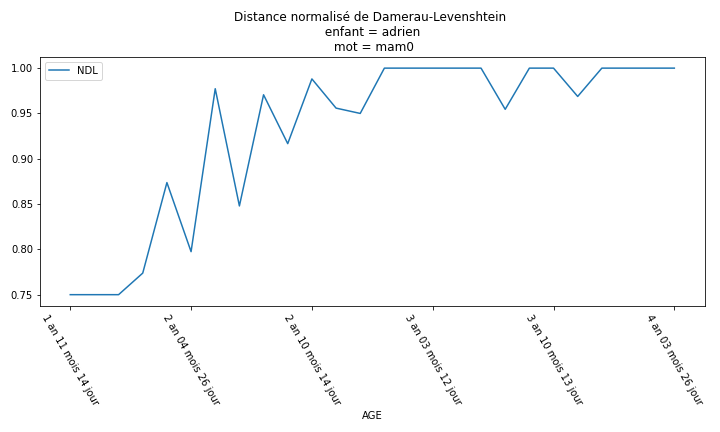
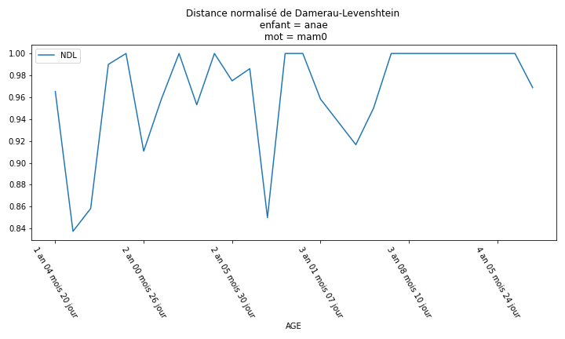

Évolution de la prononciation
La distance utilisé dans cette étude est une distance normalisé de Damerau-Levenshtein.
La distance de Damerau-Levenshtein entre deux chaînes de caractères correspond aux nombre de
suppression ,d'addition, de substitution ou de permutation de caractère pour que les deux chaînes de caractères
soit égale. La distance est dite normalisé car elle est divisé par la taille maximum des chaines de caractères, auquel on ajoute -1.
Le résultat sera donc compris entre 0 et 1. 1 représentant une similarité parfaite entre deux chaines de caractères. Et 0 , deux chaiens de caractères complétement différentes.
mettre le lien vers le support
Adrien

Anaé
